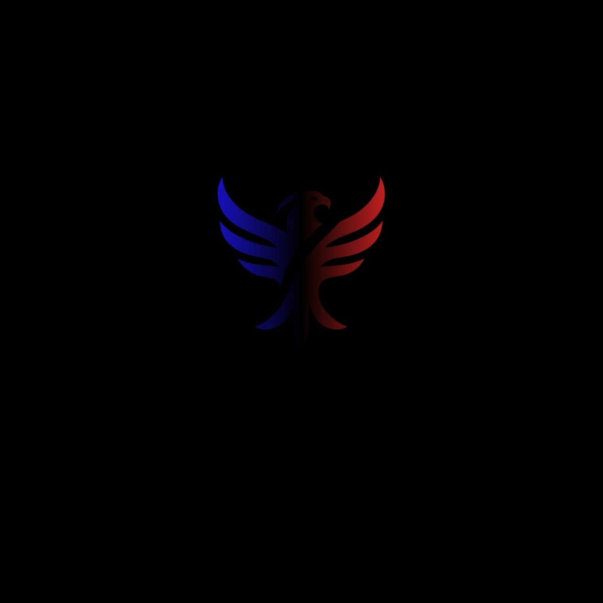
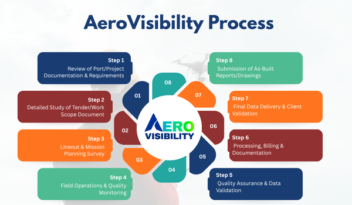
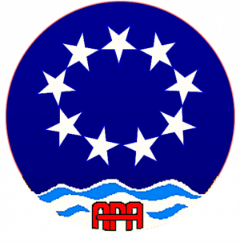
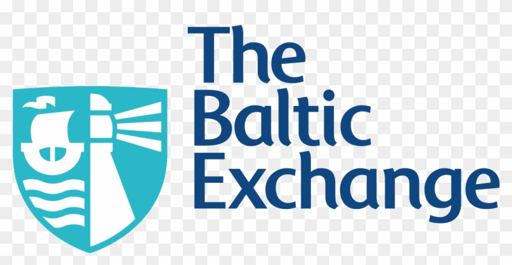
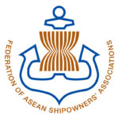
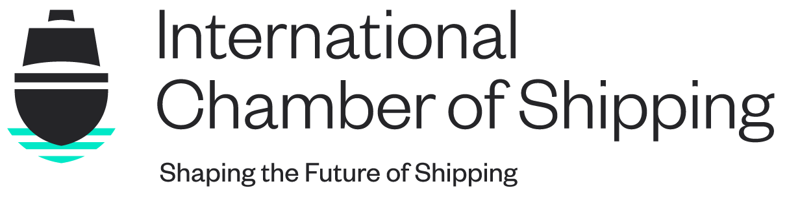
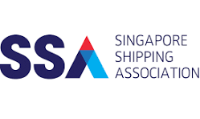
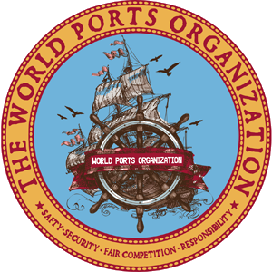

Fleet operators prepare for tighter emissions monitoring
Ports and operators are accelerating digital tracking to improve audit readiness and reduce reporting delays.
Empowering shipping, ports, and logistics companies to measure, improve, and monetize their sustainability journey with AI-powered analytics and verified ESG scores.
Trusted by Industry Leaders

Lotusmirk Ventures MCCIA
MCCIA

BizIQ ESG Visibility™ is a maritime ESG analytics platform that connects real operational data with global standards to deliver clear scores, benchmarks, and actionable insights.
We turn ESG from a burden into an advantage, helping fleets, ports, and logistics players meet regulations, win tenders, and unlock green finance.
By unifying operational data, public datasets, and ESG frameworks, we offer simple dashboards, compliance-ready reports, and AI-driven guidance for continuous improvement.
Continuous tracking and scoring of environmental, social, and governance metrics with live dashboards
Advanced autonomous assessment technology with intelligent image analysis and instant scoring
Direct access to sustainable finance opportunities and green investment networks
BizIQ ESG Visibility™ delivers the industry's first multi-stakeholder maritime ESG performance engine. Built on deep maritime operations expertise and global ESG frameworks.
AeroVisibility delivers AI-powered drone and robotics solutions for ports, enabling real-time monitoring, compliance, and smart, ESG-driven maritime operations.
From data collection to green financing, we provide everything you need to transform ESG compliance into competitive advantage.
.png)
Discover how BiziQ collects, analyzes, and scores ESG data from multiple sources to provide comprehensive sustainability ratings.

AeroVisibility enables ports to digitize operations and unlock real-time intelligence through AI-powered drones and integrated platforms.

Ports and operators are accelerating digital tracking to improve audit readiness and reduce reporting delays.
Major cargo networks are introducing ESG performance checks during vendor onboarding and tender evaluation.
Financial institutions continue to align lending terms with consistent ESG transparency and performance benchmarks.
Get answers to the most common questions about the BizIQ ESG Visibility Platform.
The platform is designed for:
It is also used by financial institutions, investors, and infrastructure funds to assess ESG performance and risk.
BizIQ maps ESG data across major global and national frameworks, including:
This allows clients to view ESG performance through multiple stakeholder lenses in one platform.
The platform uses a combination of:
An AI-powered engine extracts, structures, and maps ESG information as per global frameworks automatically.
BizIQ helps clients:
This reduces compliance risk and last-minute surprises.
BizIQ translates ESG performance into bank and investor-relevant insights. It provides individual ESG efforts and best practices to financial institutions and government authorities. Financial institutions can view:
This helps clients improve eligibility for:
Clients can control ESG visibility through:
This ensures transparency while maintaining data ownership.
BizIQ goes beyond reporting by focusing on:
It connects ESG performance with real business outcomes such as finance access, cargo preference, and regulatory readiness.
Yes. BizIQ follows enterprise-grade data security practices, including:
Client data is never shared without authorization.
Data can be updated:
This ensures ESG insights remain current and relevant.






Our platform makes ESG clear, comparable, and actionable—empowering shipowners, ports, charterers, logistics operators, and regulators to improve performance, meet global standards, and demonstrate leadership with confidence. With accurate emission monitoring and automated ESG scoring, you can reduce operational risks, win green tenders, secure better financing, and build stronger partnerships across the maritime value chain.